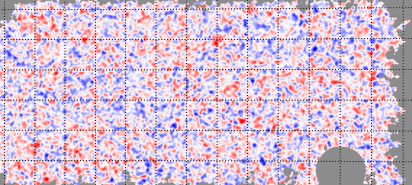

In development
Weak-lensing observables
Space reserved for lensing maps, higher-order statistics and simulation-based inference results.
Research / Weak lensing
Weak gravitational lensing provides a direct view of the projected matter distribution. This page is ready for analysis notes, figures and publications.

In development
Space reserved for lensing maps, higher-order statistics and simulation-based inference results.